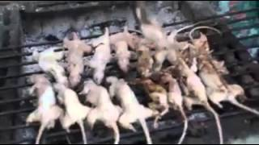

🐀Comidas Exoticas🤮

Churrasco de Ratão
RECEITA:
Origem: receita ancestral de familia
Tempo: até o vizinho reclamar da fumaça
Ingredientes:
- 3 ratos selecionados
- 1 punhado de carvão vegano
- Sal grosso do Himalaia
- Alho amassado por um martelo enferrujado(TEM QUE SER ENFERRUJADO)
- Limão espremido com ódio do chefe
- Farofa crocante de biscoito vencido (opcional, mas clássico)
Modo de Preparo:
- Acenda a churrasqueira e espere a brasa ficar no ponto “confia”.
- Tempere os ratos selecionados com sal grosso, alho e limão. Se alguém perguntar, diga: “é receita da família”.
- Coloque na grelha e vire a cada 3 horas.
- Quando estiverem no ponto “tá bonito pra foto”, retire e deixe descansar por 5 minutos .
- Sirva com farofa
Acompanhamentos:
- Dolly gelada (real)
- cerveja quente (porque sempre tem)
- Trilha sonora: pagode duvidoso ou rock anos 2000
Voltar para o inicio